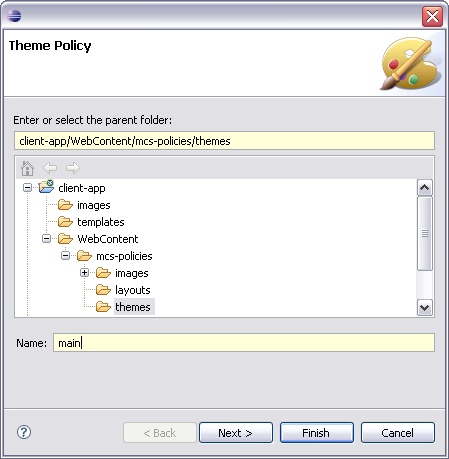
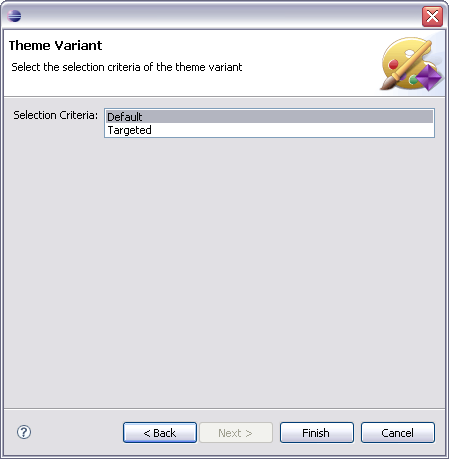
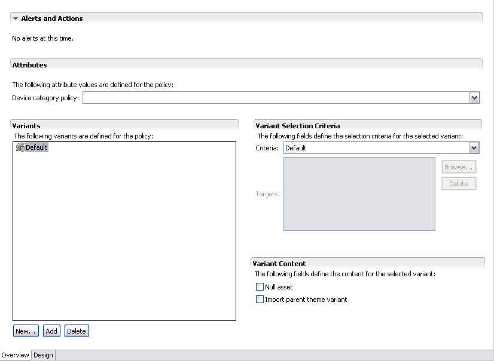

In this module, you will create the main theme policy for the application. Each theme can have variants that you define for individual devices or groups of devices.
Styles are device-dependent because devices differ greatly in the support available for this kind of information. So MCS has to identify the requesting device before applying a set of rules. Each variant is made up of a set of style rules, and each rule is identified by a selector, and has a set of properties.
You use the Theme Wizard and Theme Editor to associate variants with devices, and to define selectors and properties. You can also use the Style Rules view to get an overall picture of the themes for a particular theme variant, and perform some limited editing actions.


The Theme editor has two pages, an Overview page listing the theme variants and their general attributes, and a Design page where you can specify your style selectors and define style properties.

Next, we will detail the theme by adding appropriate selectors and setting style rules for them.